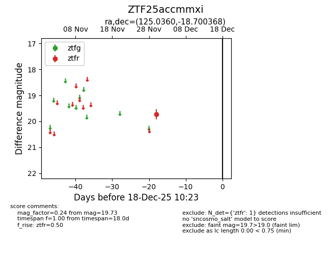
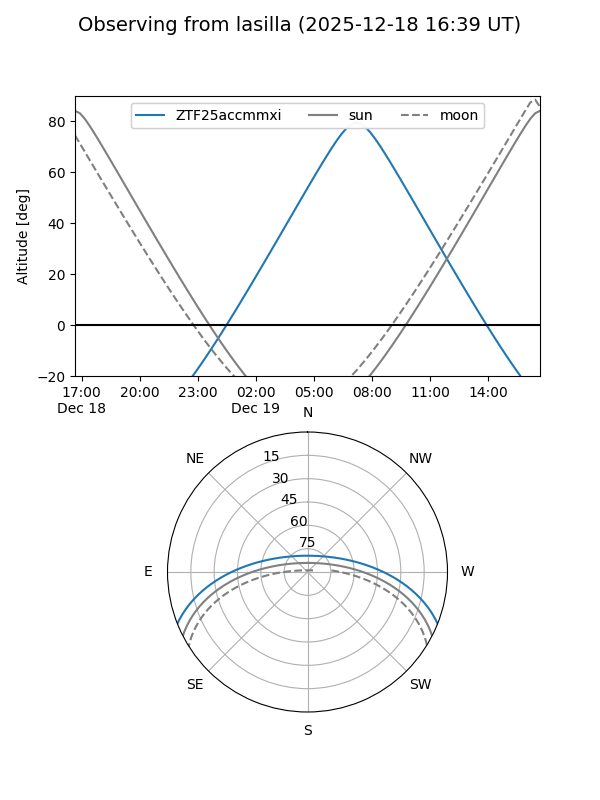

ZTF25accmmxi
Target ZTF25accmmxi at 2025-12-18 11:17
Aliases and brokers:
FINK: fink-portal.org/ZTF25accmmxi
Lasair: lasair-ztf.lsst.ac.uk/objects/ZTF25accmmxi
ALeRCE: alerce.online/object/ZTF25accmmxi
alt names
ZTF25accmmxi (ztf,fink_ztf)
Coordinates:
equatorial (ra, dec) = 125.0360,-18.70037
equatorial (HMS+DMS) = 08:20:08.65,-18:42:01.32
galactic (l, b) = (240.0072,+9.90441)
Photometry
last ztfr=19.73
1 ztfr detections
Lightcurve

Visibility


Additional plots